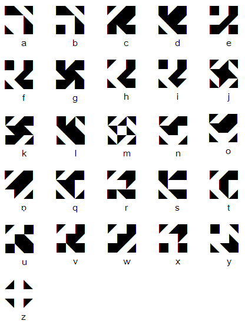

<ons-page>

        <ons-toolbar>
                <div class="left">
                        <ons-back-button>Menu</ons-back-button>
                </div>
                <div class="center">Betamaze</div>
        </ons-toolbar>

	<table width="100%" height="100%" style="background-color:white;">
		<tr>
			<td align="center">
				
			</td>
		</tr>
	</table>
<script>
	var w = window.innerWidth;
	if(w<1000)
		document.querySelector(".betamaze").width = w;
</script>
</ons-page>
